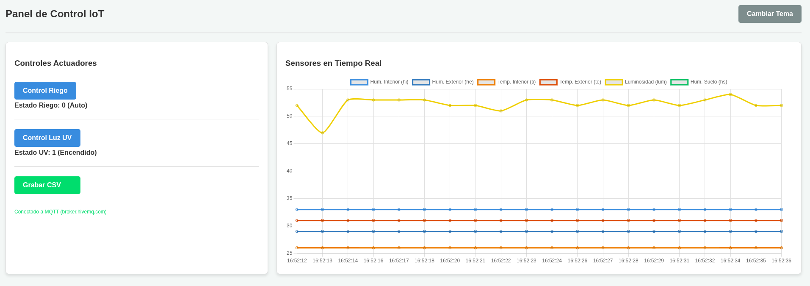

Moongarden IoT
Debido a la complejidad técnica que puede alcanzar este apartado, su desarrollo se plantea como un módulo opcional e independiente del resto del proyecto. De esta forma, los usuarios podrán completar el funcionamiento básico del invernadero sin necesidad de implementar las funcionalidades de conectividad remota.
El objetivo principal de este módulo es permitir el control remoto del invernadero y la monitorización en tiempo real de todas las variables registradas por los sensores. Para ello se emplea el protocolo MQTT (Message Queuing Telemetry Transport), ampliamente utilizado en aplicaciones de Internet de las Cosas (IoT) por su eficiencia y bajo consumo de recursos. La utilización de este protocolo es posible gracias a la capacidad de conexión a Internet incorporada en la placa ESP32 micro:STEAMaker, característica que resultó determinante en la selección de este hardware para el proyecto.
En la sección de software se ha descrito la implementación de las funciones necesarias para la conexión y comunicación mediante MQTT. A continuación, se presentan los elementos necesarios para aprovechar plenamente esta capacidad. Actualmente, la placa se encuentra suscrita a diversos canales MQTT y publica en ellos los valores obtenidos por los distintos sensores del sistema. Para visualizar y gestionar esta información es necesario disponer de una plataforma capaz de recibir, procesar y representar los datos en tiempo real.
Para ello se ha utilizado HiveMQ como servidor MQTT, ya que proporciona una infraestructura fiable para la gestión de las comunicaciones entre dispositivos y aplicaciones. A partir de esta plataforma, es posible generar mediante herramientas de inteligencia artificial el código necesario para desarrollar un panel de control que permita visualizar gráficamente la información publicada en los diferentes canales MQTT. La calidad y precisión del resultado obtenido dependerán en gran medida del prompt proporcionado a la herramienta de IA, por lo que se recomienda partir de una propuesta inicial y adaptarla posteriormente al nivel de personalización deseado.
El panel de control desarrollado permite, además de la visualización de datos, la actuación remota sobre determinados elementos del sistema. Por ejemplo, el usuario puede activar manualmente el sistema de riego o controlar el encendido de la iluminación. Estas acciones se realizan mediante la publicación de mensajes en canales MQTT específicos asociados a las variables de control, que son interpretadas por la placa para modificar el estado de los actuadores correspondientes.
| Prompt facilitado a la IA (ChatGPT) | Resultado de la páginal control.html cargada en el navegador |
| Quiero hacer una página web que controle una placa a través de mqtt con un servidor o broker mqtt. La IP pública del servidor es wss://broker.hivemq.com/mqtt, sin usuario. El servidor responde a través del puerto wss 8884. En la web debe aparecer un botón de control de riego que cada vez que lo pulses publica en el broker un tema llamado riego con un valor numérico, el valor inicial es 0 y que cada vez que pulses sume 1 a ese valor, cuando su valor es 2 y pulsas debe volver a 0. Resumen de estados de riego: 0 (riega cuando humedad baja), 1 (riega), 2 (no riega). En la web también debe aparecer un botón de control de luz ultravioleta que cada vez que se pulsa publica en el broker un tema llamado ultravioleta con un valor numérico, el valor inicial es 0 y que cada vez que pulses conmute su valor entre 0 y 1. Además deben representarse en tiempo real las gráficas de los sensores a la que la web está suscrito, en un sólo interfaz de gráficas. Los topics de las gráficas son: humedad interior (topic hi), humedad exterior (topic he), temperatura interior (topic ti), temperatura exterior (topic te), luminosidad (topic lum) y humedad de suelo (topic hs). Además debe tener un botón para empezar guardado de datos en formato csv, y alguna animación que indique que está grabando datos. Además el tema por defecto debe ser y poder cambiarse por un tema oscuro. |  |
Os dejo un ejemplo de panel realizado con la IA Gemini con el prompt anterior.